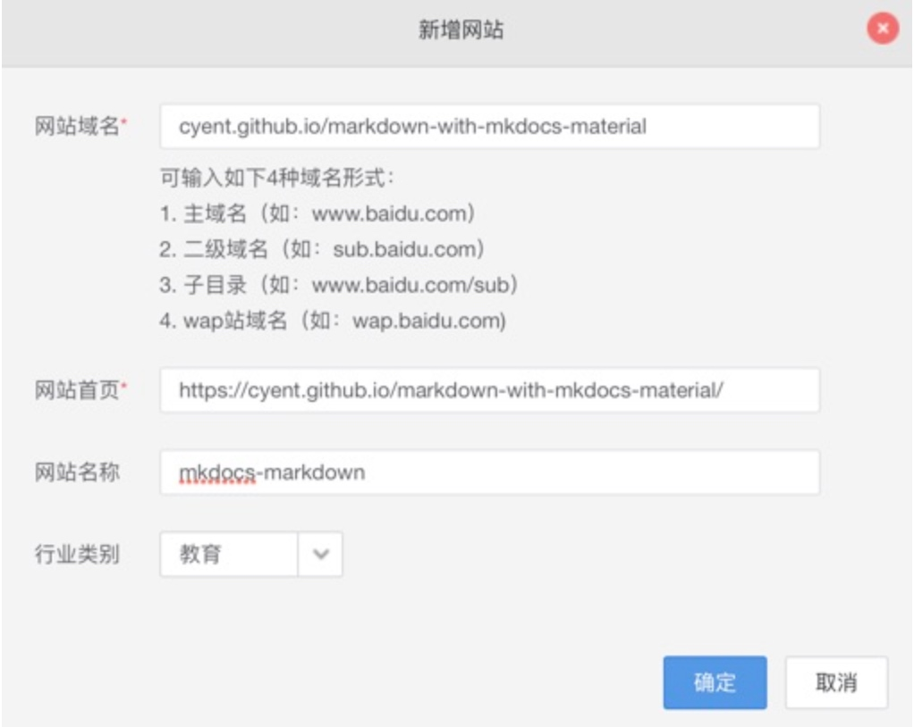
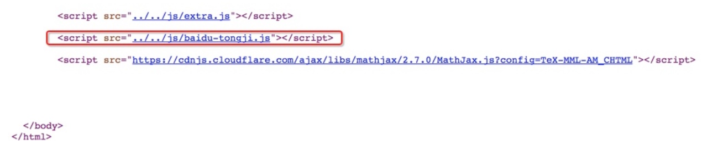

mkdocs¶
来源：https://cyent.github.io/markdown-with-mkdocs-material/
mkdocs 官网文档：https://www.mkdocs.org/
mkdocs-material 主题：https://squidfunk.github.io/mkdocs-material/
1. 本地环境搭建(含入门配置)¶
环境说明¶
- python: 2.7.13
- 依赖的python包:
| 包名 | 模块名 | 版本 |
|---|---|---|
| mkdocs | mkdocs | 1.0.4 |
| mkdocs-material | material | 3.0.6 |
| Markdown | markdown | 3.0.1 |
| pymdown-extensions | pymdownx | 6.0 |
mkdocs-material部署¶
安装¶
pip install mkdocs mkdocs-material
初始化项目¶
mkdocs new my-project
会生成my-project目录，进入该目录里，可以看到默认放置了一些文件，包括mkdocs.yml，这是主配置文件
修改主题¶
mkdocs.yml里添加:
theme: name: material
添加页面¶
mkdocs.yml里添加:
nav:
- 介绍: index.md
- 安装:
- 本地环境搭建: install/local.md
- 发布至GitHub Pages: install/github-pages.md
- 发布至自己的HTTP Server: install/http-server.md
- 语法:
- 语法总览: syntax/main.md
- 标题: syntax/headline.md
- 段落: syntax/paragraph.md
添加扩展¶
mkdocs.yml里添加:
markdown_extensions:
- admonition
- codehilite:
guess_lang: false
linenums: false
- toc:
permalink: true
- footnotes
- meta
- def_list
- pymdownx.arithmatex
- pymdownx.betterem:
smart_enable: all
- pymdownx.caret
- pymdownx.critic
- pymdownx.details
- pymdownx.emoji:
emoji_generator: !!python/name:pymdownx.emoji.to_png
- pymdownx.inlinehilite
- pymdownx.magiclink
- pymdownx.mark
- pymdownx.smartsymbols
- pymdownx.superfences
- pymdownx.tasklist
- pymdownx.tilde
[可选]添加百度统计¶
先在百度统计里创建添加站点，以本站为例: 
确定后会看到javascript代码，复制代码
在docs目录下新建js目录，并在docs/js目录里放置baidu-tongji.js，将复制的代码粘贴进来，以本站为例:
var _hmt = _hmt || []; (function() { var hm = document.createElement("script"); hm.src = "https://hm.baidu.com/hm.js?51fafb2ac8f80ecf43b05bb4cc281020"; var s = document.getElementsByTagName("script")[0]; s.parentNode.insertBefore(hm, s); })();
最后在mkdocs.yml里新增如下配置:
extra_javascript:
- 'js/baidu-tongji.js'
效果: js会自动加在前，以本站为例:

[可选]改变页面配色¶
mkdocs-material支持google material ui规范定义的19种主体配色和16种鼠标悬停超链接文字配色
在mkdocs.yml里添加配置，以本站为例:
extra:
palette:
primary: 'Blue Grey'
accent: 'Pink'
[推荐]支持中文搜索¶
虽然search功能(lunr.js)暂不直接支持中文，但测试发现设置为日语后，中文和英文搜索都可以使用
extra:
search:
language: 'jp'
另外，搜索对话框的显示文字，默认为英文，可以设置为中文。例如"search"改为中文后就叫"搜索"
theme: language: 'zh'
mkdocs.yml 范例¶
site_name: markdown语法详解(基于mkdocs-material) - cyent笔记
site_description: 关于mkdocs-material支持的markdown语法，包括传统语法和扩展语法
site_author: cyent
site_url: https://cyent.github.io/markdown-with-mkdocs-material/
repo_name: 'cyent/markdown-with-mkdocs-material'
repo_url: 'https://github.com/cyent/markdown-with-mkdocs-material'
theme:
name: material
palette:
primary: 'Blue Grey'
accent: 'Pink'
feature:
tabs: false
#font:
#text: 'Ubuntu'
#code: 'Ubuntu Mono'
language: 'zh'
extra:
social:
- type: github
link: https://github.com/cyent
search:
language: 'jp'
markdown_extensions:
- admonition
- codehilite:
guess_lang: false
linenums: false
- toc:
permalink: true
- footnotes
- meta
- def_list
- pymdownx.arithmatex
- pymdownx.betterem:
smart_enable: all
- pymdownx.caret
- pymdownx.critic
- pymdownx.details
- pymdownx.emoji:
emoji_generator: !!python/name:pymdownx.emoji.to_png
#emoji_generator: !!python/name:pymdownx.emoji.to_svg
#emoji_generator: !!python/name:pymdownx.emoji.to_png_sprite
#emoji_generator: !!python/name:pymdownx.emoji.to_svg_sprite
#emoji_generator: !!python/name:pymdownx.emoji.to_awesome
#emoji_generator: !!python/name:pymdownx.emoji.to_alt
- pymdownx.inlinehilite
- pymdownx.magiclink
- pymdownx.mark
- pymdownx.smartsymbols
- pymdownx.superfences
- pymdownx.tasklist
- pymdownx.tilde
extra_javascript:
- 'js/extra.js'
- 'js/baidu-tongji.js'
- 'https://cdnjs.cloudflare.com/ajax/libs/mathjax/2.7.0/MathJax.js?config=TeX-MML-AM_CHTML'
nav:
- 一. 介绍: index.md
- 二. 安装:
- 1. 本地环境搭建: install/local.md
- 2. 发布至GitHub Pages: install/github-pages.md
- 3. 发布至自己的HTTP Server: install/http-server.md
- 三. 语法:
- 1. 语法总览: syntax/main.md
- 2. 标题: syntax/headline.md
- 3. 段落: syntax/paragraph.md
mkdocs服务启动¶
在my-project目录里执行
mkdocs serve
http://127.0.0.1:8000/ 查看效果
2. 发布至GitHub Pages¶
通过mkdocs gh-deploy自动编译出html并发布至GitHub pages
初始化repo¶
在github上创建一个repo，名字叫my-project
将repo同步到本地
导入项目¶
将mkdocs根目录(my-project)下的所有东西移到本地git目录下 (然后可以将mkdocs根目录删除了)
发布¶
在本地git目录下执行
mkdocs gh-deploy
3. 发布至自己的HTTP Server¶
通过mkdocs build编译出html并手动同步至http server的根目录
生成站点文件¶
在git根目录下执行命令
mkdocs build
site目录
发布至http server¶
将site目录里的所有东西同步至自己的http server的根目录